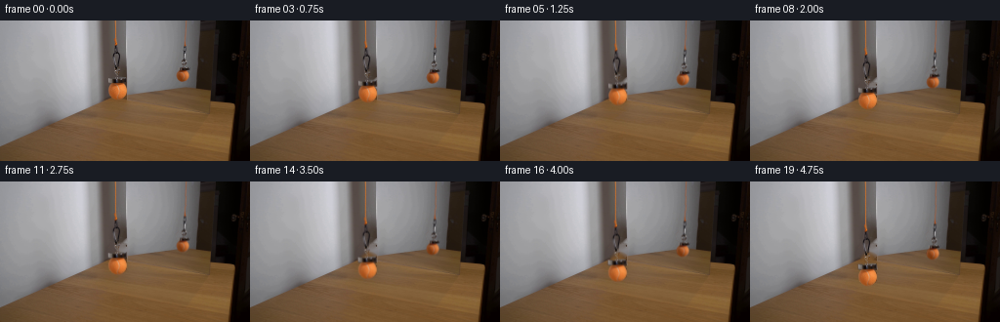
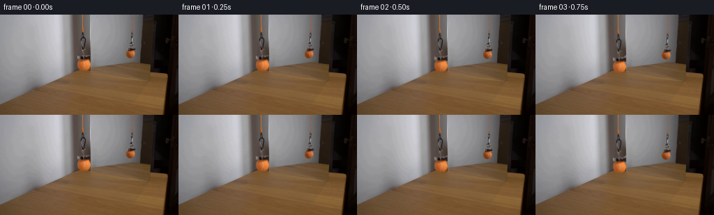

CODING AGENTS AS PIXEL WORLD MODELS
traex/GPT-6.1-Sol · 0115
点击播放 · 原生 RGB 像素
逐轮保存的候选
回放视频、检查图与代码变化。
每份候选均可单独播放。实际图片检查记录在下方工具轨迹中。
候选 01播放与检查图
点击播放 · 原生 RGB 像素


展开代码变化
--- 上一保存版本
+++ 本次保存版本
@@ -0,0 +1,110 @@
+from pathlib import Path
+import numpy as np
+from PIL import Image, ImageDraw
+import cv2
+from scipy.ndimage import map_coordinates, gaussian_filter
+import artifact_io
+
+ROOT=Path(__file__).resolve().parent
+H,W=144,256
+Y,X=np.mgrid[:H,:W].astype(np.float32)
+
+def polygon(points):
+ scale=8
+ im=Image.new('L',(W*scale,H*scale))
+ ImageDraw.Draw(im).polygon([(int((x+.5)*scale),int((y+.5)*scale)) for x,y in points],fill=255)
+ return np.array(im.resize((W,H),Image.Resampling.LANCZOS),dtype=np.float32)/255
+
+def region(x0,y0,x1,y1):
+ return polygon([(x0,y0),(x1,y0),(x1,y1),(x0,y1)])
+
+def masks(ref=False):
+ if not ref:
+ cord=region(116.4,-1,120.2,25.4)
+ chain=polygon([(116.4,25.2),(120.6,25.2),(121.8,32.5),(123.1,34.1),(123.2,38.3),(122.2,44.2),(122.7,47.4),(123.2,54.2),(122,57.6),(122.7,59.2),(117.1,59.2),(116.5,56),(117.1,53.7),(116.2,49),(116.5,46),(115.1,41.7),(114.6,36.0),(115.0,33.1),(116.2,32),(115.8,27)])
+ magnet=polygon([(110.0,58.2),(114.4,58.4),(115.5,59.2),(123.7,57.8),(129.2,58.1),(130,63.8),(127.4,64.6),(115,65.3),(110.2,63.7)])
+ ball=polygon([(113.6,64.2),(126.4,63.9),(128,65.2),(129.2,67.2),(130.1,70),(130.1,73.7),(129.5,75),(128.1,77.4),(126.7,78.8),(124.8,80.1),(122.7,80.8),(118,80.8),(115.1,79.8),(112.9,77.7),(111.3,75.5),(110.4,72.6),(110.5,69.3),(111.5,66.9)])
+ else:
+ cord=region(187.6,-1,191.3,26.3)
+ chain=polygon([(187.6,26),(190.6,26),(191.1,30.5),(190,33.4),(190.2,38.6),(191.9,41.3),(192,43.4),(190.7,45.7),(190.7,47.9),(186.8,48.5),(185.9,44.9),(184.8,41.6),(186.5,39.4),(186.7,33),(186.5,29.8)])
+ magnet=polygon([(182.4,47.2),(191.8,47.1),(194.4,47.7),(194.4,50.6),(192.8,51.1),(182.5,51.4)])
+ ball=polygon([(182.5,51.2),(191.9,51.1),(193.1,53.1),(193.9,55.3),(193.9,57.2),(193,59.2),(191.3,61.1),(189.3,62.5),(184.2,62.6),(182.5,61),(181.1,59),(180.2,56.7),(180.3,54),(181.4,52.3)])
+ return cord,chain,magnet,ball
+
+def build():
+ orig=np.array(Image.open(ROOT/'first_frame.png').convert('RGB'),dtype=np.float32)
+ all_masks=[masks(False),masks(True)]
+ total=np.maximum.reduce([m for group in all_masks for m in group])
+ hole=(total>.06).astype(np.uint8)
+ # Classical, local spatial interpolation; no external content.
+ bg=cv2.inpaint(orig.astype(np.uint8),hole,3,cv2.INPAINT_TELEA).astype(np.float32)
+ # Confine changes to the removal area, with a subpixel edge.
+ bg=orig+(bg-orig)*np.minimum(total*3,1)[...,None]
+ Image.fromarray(np.uint8(np.clip(bg,0,255))).save(ROOT/'.tmp/background.png')
+ objects=[]
+ for ref,group in enumerate(all_masks):
+ cord,chain,magnet,ball=group
+ body=np.maximum.reduce([chain,magnet,ball])
+ diff=orig-bg
+ # Thin metal links have transparent interiors. Recover their alpha
+ # from their luminance contrast; keep the solid magnet and ball solid.
+ strength=np.max(np.abs(diff),axis=2)
+ a_chain=np.clip(strength/62,0,1)*np.minimum(chain*4,1)
+ a_solid=np.maximum(magnet,ball)
+ # Saturated ball edges are separated from the gray mirror and wood.
+ excess=(orig[...,0]-orig[...,1])-(bg[...,0]-bg[...,1])
+ edge=np.clip(excess/55,0,1)
+ erosion=cv2.erode((ball>.75).astype(np.uint8),np.ones((3,3),np.uint8)).astype(np.float32)
+ a_ball=ball*np.maximum(edge,erosion)
+ a_solid=np.maximum(magnet,a_ball)
+ alpha=np.maximum(a_chain,a_solid)
+ alpha=np.maximum(alpha, np.clip(strength/180,0,1)*body)
+ alpha*=body>.015
+ # Premultiplied decontaminated source samples.
+ prem=orig-(1-alpha[...,None])*bg
+ prem=np.clip(prem,0,255*alpha[...,None])
+ # Orange cord alpha, decontaminated against the same local background.
+ a_cord=np.clip(((orig[...,0]-orig[...,1])-(bg[...,0]-bg[...,1]))/70,0,1)*cord
+ a_cord=np.maximum(a_cord,np.clip(strength/180,0,1)*cord)
+ p_cord=np.clip(orig-(1-a_cord[...,None])*bg,0,255*a_cord[...,None])
+ objects.append((alpha,prem,a_cord,p_cord))
+ return orig,bg,objects
+
+def sample(arr,sy,sx):
+ if arr.ndim==2:
+ return map_coordinates(arr,[sy,sx],order=1,mode='constant',cval=0,prefilter=False)
+ return np.stack([map_coordinates(arr[...,c],[sy,sx],order=1,mode='constant',cval=0,prefilter=False) for c in range(3)],axis=-1)
+
+def composite(frame,alpha,prem,sy,sx):
+ a=sample(alpha,sy,sx)
+ p=sample(prem,sy,sx)
+ return frame*(1-a[...,None])+p
+
+def generate():
+ (ROOT/'.tmp').mkdir(exist_ok=True)
+ orig,bg,objects=build()
+ frames=[orig.astype(np.uint8)]
+ # Lower at a near-uniform, deliberately slow speed, with a gentle onset.
+ for k in range(1,20):
+ t=k/4
+ dy=5.8*(t-.30*(1-np.exp(-t/.30)))
+ # Nearly rigid vertical translation: the mirror image is smaller
+ # because the virtual image is farther from the fixed camera.
+ out=bg.copy()
+ for j,(alpha,prem,rope_a,rope_p) in enumerate(objects):
+ s=1 if j==0 else .674
+ d=dy*s
+ # Microscopic suspension sway, rather than a pendulum swing.
+ dx=.26*np.sin(t*1.35)*(1-np.exp(-t))*s
+ # Feed out orange cord from above the shot. Keep the upper cord
+ # stationary, repeating its original fiber texture in the new length.
+ insert=15.0
+ sy=np.where(Y<insert,Y,np.where(Y<insert+d,6+np.mod(Y-insert,9),Y-d))
+ sx=X-dx*np.clip(Y/(25+d),0,1)
+ out=composite(out,rope_a,rope_p,sy,sx)
+ out=composite(out,alpha,prem,Y-d,X-dx)
+ frames.append(np.uint8(np.clip(out,0,255).round()))
+ frames=np.stack(frames)
+ artifact_io.save(frames,ROOT)
+
+if __name__=='__main__':generate()
候选 02播放与检查图
点击播放 · 原生 RGB 像素

展开代码变化
--- 上一保存版本
+++ 本次保存版本
@@ -38,6 +38,30 @@
hole=(total>.06).astype(np.uint8)
# Classical, local spatial interpolation; no external content.
bg=cv2.inpaint(orig.astype(np.uint8),hole,3,cv2.INPAINT_TELEA).astype(np.float32)
+ # The real sphere crosses a wood/desk boundary next to the mirror's
+ # vertical edge. Reconstruct those two planes separately so interpolation
+ # cannot pull bright mirror pixels into the exposed wood.
+ row=np.mean(bg[55:58],axis=0)
+ row=gaussian_filter(row,(.6,0))
+ wood=row[None,:,:]-.35*(Y-56)[...,None]
+ # Desk edge observed on either side of the occluded ball.
+ edge_y=82.5-.305*(X-106)
+ desk_mix=np.clip((Y-edge_y+1.0)/2.0,0,1)
+ desk=np.zeros_like(orig)
+ for x in range(107,131):
+ # Local wood grain on the already visible desk supplies texture/color.
+ base=np.mean(orig[83:86,x],axis=0)
+ desk[:,x]=base
+ plane=wood*(1-desk_mix[...,None])+desk*desk_mix[...,None]
+ real_area=(X>=110)&(X<=129)&(Y>=58)&(Y<=81)&(total>.025)
+ bg[real_area]=plane[real_area]
+ # Neutral mirror backing is smoothly varying; interpolate it horizontally
+ # across the virtual ball instead of filling across its silhouette.
+ for y in range(47,64):
+ for x in range(179,196):
+ if total[y,x]>.025:
+ f=(x-178)/18
+ bg[y,x]=orig[y,178]*(1-f)+orig[y,196]*f
# Confine changes to the removal area, with a subpixel edge.
bg=orig+(bg-orig)*np.minimum(total*3,1)[...,None]
Image.fromarray(np.uint8(np.clip(bg,0,255))).save(ROOT/'.tmp/background.png')
候选 03播放与检查图
可观测工具轨迹
实际执行的命令与返回图片。
命令 1exit 0
/bin/bash -lc "ls -la && cat prompt.txt && printf '\\n---RULES---\\n' && cat GENERATION_RULES.md"
命令 2exit 0
/bin/bash -lc "cat artifact_io.py && python - <<'PY'
from PIL import Image
import numpy as np
im=np.array(Image.open('first_frame.png'))
print(im.shape)
# coarse RGB cells
for y in range(0,144,6):
print(f'{y:3d}', ' '.join('%02x%02x%02x'%tuple(im[y:y+6,x:x+8].mean((0,1)).astype(int)) for x in range(0,256,8)))
PY"命令 3exit 0
/bin/bash -lc "python - <<'PY'
from PIL import Image
import numpy as np
from scipy import ndimage as ndi
a=np.array(Image.open('first_frame.png')).astype(float)
r,g,b=a.transpose(2,0,1)
s=(r-g>24)&(g-b>10)&(r>110)&(np.indices(r.shape)[0]<80)
l,n=ndi.label(s)
for i in range(1,n+1):
ys,xs=np.where(l==i)
if len(xs)>2: print(len(xs),'bbox',xs.min(),ys.min(),xs.max(),ys.max(),'mean',a[ys,xs].mean(0))
# ascii full 128 width
for y in range(0,144,2):
line=''
for x in range(0,256,2):
R,G,B=a[y:y+2,x:x+2].mean((0,1)); L=(R+G+B)/3
if R-G>45 and R>130: ch='O'
elif R-G>28 and G-B>15: ch='t'
elif R-G>12 and G-B>7: ch='w'
elif L<15: ch=' '
elif L<40: ch='.'
elif L<70: ch=':'
elif L<95: ch='-'
elif L<120: ch='='
elif L<150: ch='+'
elif L<180: ch='*'
elif L<210: ch='#'
else: ch='@'
line+=ch
print(f'{y:03}',line)
PY"命令 4exit 0
/bin/bash -lc "python - <<'PY'
from PIL import Image
import numpy as np
a=np.array(Image.open('first_frame.png'))
for y in [0,10,20,24,26,28,30,32,34,36,38,40,42,44,46,48,50,52,54,56,58,60,62,64,66,68,72,76,80,82,84]:
print('y',y)
print(' '.join(f'{x}:{tuple(a[y,x])}' for x in range(105,133)))
print('\\nReflection')
for y in range(20,55,2):
print(y,' '.join(f'{x}:{tuple(a[y,x])}' for x in range(184,194)))
PY"命令 5exit 0
/bin/bash -lc "python - <<'PY'
import numpy as np
from PIL import Image
a=np.asarray(Image.open('first_frame.png')).astype(int)
# unit-pixel ascii detail saturated region and attachment. two panels separated
for y in range(0,86):
ss=[]
for xl,xr in [(108,134),(177,198)]:
line=''
for x in range(xl,xr):
r,g,b=a[y,x]; l=(r+g+b)/3
if r-g>60:ch='O'
elif r-g>30:ch='o'
elif r-g>17 and g-b>8:ch='w'
elif l<25:ch=' '
elif l<50:ch='.'
elif l<70:ch=':'
elif l<90:ch='-'
elif l<110:ch='='
elif l<130:ch='+'
elif l<155:ch='*'
elif l<180:ch='#'
elif l<210:ch='@'
else:ch='"'$'"'
line+=ch
ss.append(line)
print(f'{y:02d} '+ss[0]+' | '+ss[1])
PY"命令 6exit 0
/bin/bash -lc "python - <<'PY'
import numpy as np
from PIL import Image
a=np.asarray(Image.open('first_frame.png')).astype(int)
for y in range(45,66):
print(y,' '.join(f'{x}:{a[y,x,0]:02d}/{a[y,x,1]:02d}/{a[y,x,2]:02d}' for x in range(110,130)))
PY"命令 7exit 0
/bin/bash -lc "python - <<'PY' import importlib.util for m in ['cv2','scipy','PIL']:print(m, bool(importlib.util.find_spec(m))) PY"
命令 8exit 0
/bin/bash -lc "python - <<'PY'
import numpy as np
from PIL import Image
a=np.asarray(Image.open('first_frame.png')).astype(int)
# print ball width in each row threshold vs local background
for reg in [(105,135,58,83),(178,196,39,65)]:
x0,x1,y0,y1=reg
for y in range(y0,y1):
print(y, ' '.join(f'{x}={a[y,x,0]-a[y,x,1]}/{int(a[y,x].mean())}' for x in range(x0,x1)))
print()
PY"命令 9exit 0
/bin/bash -lc "cat > generate.py <<'PY'
from pathlib import Path
import numpy as np
from PIL import Image, ImageDraw
import cv2
from scipy.ndimage import map_coordinates, gaussian_filter
import artifact_io
ROOT=Path(__file__).resolve().parent
H,W=144,256
Y,X=np.mgrid[:H,:W].astype(np.float32)
def polygon(points):
scale=8
im=Image.new('L',(W*scale,H*scale))
ImageDraw.Draw(im).polygon([(int((x+.5)*scale),int((y+.5)*scale)) for x,y in points],fill=255)
return np.array(im.resize((W,H),Image.Resampling.LANCZOS),dtype=np.float32)/255
def region(x0,y0,x1,y1):
return polygon([(x0,y0),(x1,y0),(x1,y1),(x0,y1)])
def masks(ref=False):
if not ref:
cord=region(116.4,-1,120.2,25.4)
chain=polygon([(116.4,25.2),(120.6,25.2),(121.8,32.5),(123.1,34.1),(123.2,38.3),(122.2,44.2),(122.7,47.4),(123.2,54.2),(122,57.6),(122.7,59.2),(117.1,59.2),(116.5,56),(117.1,53.7),(116.2,49),(116.5,46),(115.1,41.7),(114.6,36.0),(115.0,33.1),(116.2,32),(115.8,27)])
magnet=polygon([(110.0,58.2),(114.4,58.4),(115.5,59.2),(123.7,57.8),(129.2,58.1),(130,63.8),(127.4,64.6),(115,65.3),(110.2,63.7)])
ball=polygon([(113.6,64.2),(126.4,63.9),(128,65.2),(129.2,67.2),(130.1,70),(130.1,73.7),(129.5,75),(128.1,77.4),(126.7,78.8),(124.8,80.1),(122.7,80.8),(118,80.8),(115.1,79.8),(112.9,77.7),(111.3,75.5),(110.4,72.6),(110.5,69.3),(111.5,66.9)])
else:
cord=region(187.6,-1,191.3,26.3)
chain=polygon([(187.6,26),(190.6,26),(191.1,30.5),(190,33.4),(190.2,38.6),(191.9,41.3),(192,43.4),(190.7,45.7),(190.7,47.9),(186.8,48.5),(185.9,44.9),(184.8,41.6),(186.5,39.4),(186.7,33),(186.5,29.8)])
magnet=polygon([(182.4,47.2),(191.8,47.1),(194.4,47.7),(194.4,50.6),(192.8,51.1),(182.5,51.4)])
ball=polygon([(182.5,51.2),(191.9,51.1),(193.1,53.1),(193.9,55.3),(193.9,57.2),(193,59.2),(191.3,61.1),(189.3,62.5),(184.2,62.6),(182.5,61),(181.1,59),(180.2,56.7),(180.3,54),(181.4,52.3)])
return cord,chain,magnet,ball
def build():
orig=np.array(Image.open(ROOT/'first_frame.png').convert('RGB'),dtype=np.float32)
all_masks=[masks(False),masks(True)]
total=np.maximum.reduce([m for group in all_masks for m in group])
hole=(total>.06).astype(np.uint8)
# Classical, local spatial interpolation; no external content.
bg=cv2.inpaint(orig.astype(np.uint8),hole,3,cv2.INPAINT_TELEA).astype(np.float32)
# Confine changes to the removal area, with a subpixel edge.
bg=orig+(bg-orig)*np.minimum(total*3,1)[...,None]
Image.fromarray(np.uint8(np.clip(bg,0,255))).save(ROOT/'.tmp/background.png')
objects=[]
for ref,group in enumerate(all_masks):
cord,chain,magnet,ball=group
body=np.maximum.reduce([chain,magnet,ball])
diff=orig-bg
# Thin metal links have transparent interiors. Recover their alpha
# from their luminance contrast; keep the solid magnet and ball solid.
strength=np.max(np.abs(diff),axis=2)
a_chain=np.clip(strength/62,0,1)*np.minimum(chain*4,1)
a_solid=np.maximum(magnet,ball)
# Saturated ball edges are separated from the gray mirror and wood.
excess=(orig[...,0]-orig[...,1])-(bg[...,0]-bg[...,1])
edge=np.clip(excess/55,0,1)
erosion=cv2.erode((ball>.75).astype(np.uint8),np.ones((3,3),np.uint8)).astype(np.float32)
a_ball=ball*np.maximum(edge,erosion)
a_solid=np.maximum(magnet,a_ball)
alpha=np.maximum(a_chain,a_solid)
alpha=np.maximum(alpha, np.clip(strength/180,0,1)*body)
alpha*=body>.015
# Premultiplied decontaminated source samples.
prem=orig-(1-alpha[...,None])*bg
prem=np.clip(prem,0,255*alpha[...,None])
# Orange cord alpha, decontaminated against the same local background.
a_cord=np.clip(((orig[...,0]-orig[...,1])-(bg[...,0]-bg[...,1]))/70,0,1)*cord
a_cord=np.maximum(a_cord,np.clip(strength/180,0,1)*cord)
p_cord=np.clip(orig-(1-a_cord[...,None])*bg,0,255*a_cord[...,None])
objects.append((alpha,prem,a_cord,p_cord))
return orig,bg,objects
def sample(arr,sy,sx):
if arr.ndim==2:
return map_coordinates(arr,[sy,sx],order=1,mode='constant',cval=0,prefilter=False)
return np.stack([map_coordinates(arr[...,c],[sy,sx],order=1,mode='constant',cval=0,prefilter=False) for c in range(3)],axis=-1)
def composite(frame,alpha,prem,sy,sx):
a=sample(alpha,sy,sx)
p=sample(prem,sy,sx)
return frame*(1-a[...,None])+p
def generate():
(ROOT/'.tmp').mkdir(exist_ok=True)
orig,bg,objects=build()
frames=[orig.astype(np.uint8)]
# Lower at a near-uniform, deliberately slow speed, with a gentle onset.
for k in range(1,20):
t=k/4
dy=5.8*(t-.30*(1-np.exp(-t/.30)))
# Nearly rigid vertical translation: the mirror image is smaller
# because the virtual image is farther from the fixed camera.
out=bg.copy()
for j,(alpha,prem,rope_a,rope_p) in enumerate(objects):
s=1 if j==0 else .674
d=dy*s
# Microscopic suspension sway, rather than a pendulum swing.
dx=.26*np.sin(t*1.35)*(1-np.exp(-t))*s
# Feed out orange cord from above the shot. Keep the upper cord
# stationary, repeating its original fiber texture in the new length.
insert=15.0
sy=np.where(Y<insert,Y,np.where(Y<insert+d,6+np.mod(Y-insert,9),Y-d))
sx=X-dx*np.clip(Y/(25+d),0,1)
out=composite(out,rope_a,rope_p,sy,sx)
out=composite(out,alpha,prem,Y-d,X-dx)
frames.append(np.uint8(np.clip(out,0,255).round()))
frames=np.stack(frames)
artifact_io.save(frames,ROOT)
if __name__=='__main__':generate()
PY
python generate.py"命令 10exit 0
/bin/bash -lc "python - <<'PY'
from PIL import Image
import numpy as np
a=np.asarray(Image.open('frames/19.png')).astype(int)
b=np.asarray(Image.open('.tmp/background.png')).astype(int)
for y in range(18,113):
ss=[]
for ar,xl,xr in [(a,108,135),(a,177,198),(b,108,135)]:
line=''
for x in range(xl,xr):
r,g,bb=ar[y,x];l=(r+g+bb)/3
if r-g>60:ch='O'
elif r-g>30:ch='o'
elif r-g>17 and g-bb>8:ch='w'
elif l<25:ch=' '
elif l<50:ch='.'
elif l<70:ch=':'
elif l<90:ch='-'
elif l<110:ch='='
elif l<130:ch='+'
elif l<155:ch='*'
elif l<180:ch='#'
elif l<210:ch='@'
else:ch='"'$'"'
line+=ch
ss.append(line)
print(f'{y:03} '+ss[0]+' | '+ss[1]+' | '+ss[2])
orig=np.asarray(Image.open('first_frame.png')).astype(int)
for k in [1,5,10,19]:
a=np.asarray(Image.open(f'frames/{k:02d}.png')).astype(int)
d=np.max(abs(a-orig),2)
print(k,'changed',np.sum(d>0),'strong',np.sum(d>20))
PY"命令 11exit 0
/bin/bash -lc "python - <<'PY'
p='generate.py'
s=open(p).read()
s=s.replace(\" # Confine changes to the removal area, with a subpixel edge.\\n bg=orig+(bg-orig)*np.minimum(total*3,1)[...,None]\", \"\"\" # The real sphere crosses a wood/desk boundary next to the mirror's
# vertical edge. Reconstruct those two planes separately so interpolation
# cannot pull bright mirror pixels into the exposed wood.
row=np.mean(bg[55:58],axis=0)
row=gaussian_filter(row,(.6,0))
wood=row[None,:,:]-.35*(Y-56)[...,None]
# Desk edge observed on either side of the occluded ball.
edge_y=82.5-.305*(X-106)
desk_mix=np.clip((Y-edge_y+1.0)/2.0,0,1)
desk=np.zeros_like(orig)
for x in range(107,131):
# Local wood grain on the already visible desk supplies texture/color.
base=np.mean(orig[83:86,x],axis=0)
desk[:,x]=base
plane=wood*(1-desk_mix[...,None])+desk*desk_mix[...,None]
real_area=(X>=110)&(X<=129)&(Y>=58)&(Y<=81)&(total>.025)
bg[real_area]=plane[real_area]
# Neutral mirror backing is smoothly varying; interpolate it horizontally
# across the virtual ball instead of filling across its silhouette.
for y in range(47,64):
for x in range(179,196):
if total[y,x]>.025:
f=(x-178)/18
bg[y,x]=orig[y,178]*(1-f)+orig[y,196]*f
# Confine changes to the removal area, with a subpixel edge.
bg=orig+(bg-orig)*np.minimum(total*3,1)[...,None]\"\"\")
open(p,'w').write(s)
PY
python generate.py
python - <<'PY'
from PIL import Image
import numpy as np
b=np.asarray(Image.open('.tmp/background.png')).astype(int)
for y in [55,58,62,66,70,74,77,80]:
print(y,[(x,b[y,x].tolist()) for x in [110,113,117,120,124,128,129,130]])
a=np.asarray(Image.open('frames/19.png')).astype(int)
for y in [85,90,96,100,106]:print('final',y,[(x,a[y,x].tolist()) for x in [111,114,120,126,130]])
PY"命令 12exit 0
/bin/bash -lc "python - <<'PY'
from pathlib import Path
from PIL import Image
import numpy as np
import generate
orig=np.array(Image.open('first_frame.png').convert('RGB'))
frames=np.stack([np.array(Image.open(p)) for p in sorted(Path('frames').glob('*.png'))])
assert frames.shape==(20,144,256,3)
assert frames.dtype==np.uint8
assert np.array_equal(frames[0],orig)
print('Validated:',frames.shape,frames.dtype,'frame 00 identical')
# Track saturated spheres in disjoint ROIs.
for k in [0,5,10,15,19]:
im=frames[k].astype(float)
yy,xx=np.mgrid[:144,:256]
for label,roi in [('ball',(xx>108)&(xx<134)&(yy>60)),('reflection',(xx>179)&(xx<196)&(yy>48))]:
mask=(im[:,:,0]-im[:,:,1]>55)&roi
weights=np.where(mask,im[:,:,0]-im[:,:,1]-45,0)
print(k,label,round(float((weights*yy).sum()/weights.sum()),2))
print('Artifacts:',', '.join(p.name for p in [Path('pixels.npz'),Path('index.html'),Path('inspection.png')]))
PY"保存候选 3 份；完成命令 12 次；可验证图片返回 0 张。原始 API 响应与完整日志保留在本地。